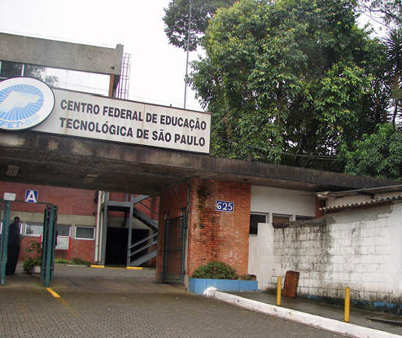

A história...
A mudança para Cefet das escolas técnicas em 1999 foi resultado de medidas governamentais destinadas a implementar uma política de ampliação dos cursos de curta duração, os chamados tecnólogos. Essa abordagem visava atrair os estudantes dos cursos mais extensos, especialmente nas escolas técnicas federais. Os tecnólogos tinham currículos notavelmente distintos dos cursos mais longos ou plenos. O Plano de Desenvolvimento Institucional do atual Instituto Federal de São Paulo (2009-2013) indica que a criação do Centro Federal de Educação Tecnológica de São Paulo ocorreu em 1999, em 18 de janeiro, por meio de um decreto sem número emitido pelo governo de Fernando Henrique Cardoso. Em 2005, foi lançado o Plano de Expansão, fase I, que propunha a construção de 64 novas unidades de ensino. Assim, a rede, que contava com 140 unidades em 2002, chegou a 204 escolas até o final de 2007, representando um aumento de 45%. A fase II, iniciada no início de 2007, propôs a construção de mais de 150 novas unidades. Ao término de 2010, a rede federal contaria com 354 unidades, marcando um novo paradigma na educação profissional com um crescimento de 150% no número de instituições federais.
Diretores

Francisco Gayego Filho (ago/1994 a jan/1999)
Acréscimo de dois anos de mandato, na condição de Pro Tempore, em virtude da transformação da ETFSP em CEFET.
Garabed Kenchian (jan/2001 a jan/2009)